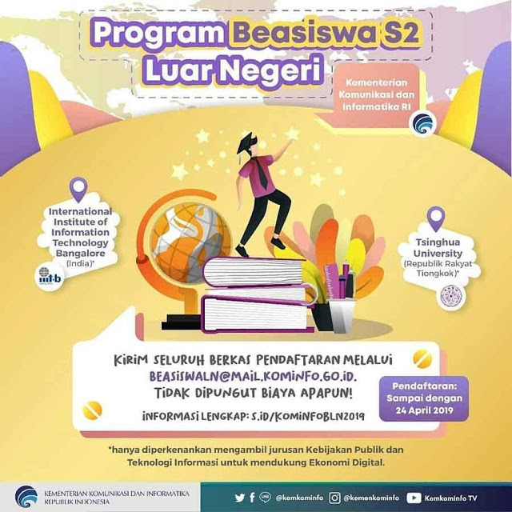

Beasiswa S2 Luar Negeri Kominfo 2019 di India dan Tiongkok
Program Beasiswa S2 Luar Negeri Kominfo 2019 merupakan sebuah program beasiswa terbaru nih yang diselenggarakan oleh kementerian informasi dan komunikasi untuk semua masyarakat indonesia yang sudah lulus S1 dan ingin melanjutkan ke jenjang S2 ke luar negeri. Adapun informasi beasiswa terbaru kali ini admin sampaikan juga karena siapa tau bisa menjadi ajakan juga untuk kalian melanjutkan pendidikan keluar negeri.
Yuk semua masyarakat yang ingin segera melanjutkan pendidikannya bisa langsung mendaftarkan diri sebelum waktu deadline ditutup loh pada tanggal 24 April 2019. Cek semua informasi data dan berkas yang diperlukan dengan melihat keterangan selengkapnya dibawah ini ya.
Beasiswa S2 Luar Negeri Kementerian Komunikasi dan Informatika TA 2019 terbuka bagi masyarakat umum dandifokuskan hanya di 2 (dua) Negara, yaitu di Universitas Tsinghua, Republik Rakyat Tiongkok dan International Institute of Information Technology Bangalore, India, dengan persyaratan sebagai berikut:

Berkas-berkas yang disiapkan:
- ID Card (KTP/Paspor)
- Ijazah
- TranskripNilai
- Formulir Pendaftaran (https://k-cloud.kominfo.go.id/s/BeasiswaS2LNKominfo)
- Surat Izin Atasan(https://k-cloud.kominfo.go.id/s/BeasiswaS2LNKominfo)
- Surat Rekomendasi(https://k-cloud.kominfo.go.id/s/BeasiswaS2LNKominfo)
- Toefl/Ielts (jika telah tersedia)
Syarat dan Ketentuan Program Beasiswa S2 Luar Negeri Kominfo 2019
- Persyaratan Umum
1. Warga Negara Indonesia (WNI).
2. Berusia maksimal 35 tahun pada tanggal 31 Desember 2019.
3. Belum memiliki gelar S2 dan tidak sedang menerima beasiswa lain dan/atau sedang mengikuti program pendidikan S2 dari lembaga lain.
4. Mendapatkan izin pejabat yang berwenang.
5. Telah memiliki pengalaman kerja minimal 2 (dua) tahun.
6. Pelamar harus menunjukkan potensi menjadi pemimpin, pembuat keputusan, memiliki atribut personal, integritas, intelektual dan interpersonal yang mencerminkan potensi ini.
7. Akan kembali ke Indonesia setelah menyelesaikan pendidikan.
8. Lulusan Sarjana (S1) dengan Indeks Prestasi Kumulatif (IPK) minimal 2,9 (dari skala 4,0).
9. Berkas pendaftaran dapat diemail melalui beasiswaln@mail.kominfo.go.id.
Pendaftaran dibuka dari tanggal 15 Maret 2019 sampai dengan 24 April 2019.
Timeline Program Beasiswa S2 Luar Negeri Kominfo 2019
- Pendaftaran dan Seleksi Administrasi: 15 Maret s/d 24 April 2019
- Pengumuman Hasil Seleksi Administrasi: 25 April 2019
- Seleksi Wawancara oleh Kementerian Kominfo: 29 April 2019
- Pengumuman Hasil Seleksi Wawancara: 29 April 2019
- Fasilitasi Pendampingan Registrasi Online(TsinghuaUniversity): 30 April 2019
- Pengiriman List Calon Pelamar IIIT-B: 15 Mei 2019
- Pengumuman Peserta Seleksi Kampus IIIT-B: 16–21 Mei 2019
- Seleksi oleh Kampus (IIIT-B): 22 Mei 2019
- Pengumuman Penerima Beasiswa (Final): Juni 2019
- Pengurusan Perizinan: Juni 2019
- Pembekalan: Juni 2019
Informasi diatas masih kurang lengkap? ada ko informasi lebih lengkapnya lagi bisa kalian cek melalui link ini ya
s.id/KominfoBLN2019
Sekian informasi diatas yang bisa admin sampaikan kepada kalian semua, semoga bisa informasi ini berguna untuk kalian semua yang kebetulan sedang mencari beasiswa keluar negeri untuk S2. Goodluck ya para pejuang beasiswa dimanapun berada, sukses selalu dan semoga bisa menjadi salah satu didalam beasiswa tersebut.